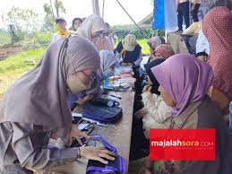

dokumentasi cek kesehatan warga desa
Bakti Desa ke Desa Sukaluyu Pangalengan
Wakil Kepala Sekolah bidang Kesiswaan Encep Ridwan, S.Pd., M.M.Pd., menjelaskan Bakdes ini juga melibatkan 40 guru sebagai pembimbing siswa. “Ada 90 rumah warga yang menjadi tempat menginap (orang tua asuh) siswa selama kegiatan Bakdes,” kata Encep, di lokasi kegiatan, Sabtu (10/2/2024). Lanjutnya, kegiatan Bakdes merupakan salah satu program unggulan SMAN 3 Kota Bandung yang diselenggarakan sejak tahun 2011.
“Alhamdulillah, dengan ijin Allah SWT dan dukungan dari komite sekolah, orang tua siswa, semua stakeholder sehingga kegiatan Bakdes bisa terlaksana kembali di tahun ini,” kata Encep. Dalam rangkaian kegiatan Bakdes SMAN 3 Kota Bandung, dilakukan juga pengobatan gratis, pembagian sembako, pembagian baju layak pakai, penyuluhan kepada masyarakat, penanaman pohon, bantuan uang tunai sebesar Rp 83 juta untuk merenovasi madrasah.
Bakti Desa atau biasa disingkat Bakdes SMAN 3 Kota Bandung, tahun 2024 ini kembali diadakan. Sebelumnya sempat vakum sekitar empat tahun dari 2020 sampai 2023 karena pandemi. Bakdes tahun 2024 ini dilaksanakan di Desa Sukaluyu, Pangalengan, Kabupaten Bandung, selama tiga hari, tanggal 8-10 Februari 2024. Sebanyak 359 siswa kelas XI, dilibatkan dalam kegiatan ini. Mereka diinapkan di rumah warga yang menjadi orang tua asuhnya.Setiap hari mereka mengikuti aktifitas sehari-hari yang dilakukan oleh orang tua asuhnya, dari bangun hingga tidur. Seperti berkebun, memetik teh, mengurus ternak dan lain sebagainya.